Bara de navigare
Pentru meniu am ales o bara de navigare orizontala, care pe telefon devine verticala pentru a fi mai usor de utilizat.Prin acest meniu utilizatorul poate accesa paginile cu usurinta.

Acest document este realizat pentru a prezenta arhitectura aplicatiei web Garbage Smart Monitor. Aplicatia poate fi accesata la acest link.
Aplicatia GaSm vine in sprijinul cetatenilor si a autoritatilor, oferind urmatoarele functionalitati:
In abordarea proiectul GaSM am inceput cu implementarea interfetei grafice folosindu-ne de fisiere HTML si CSS. Interfata grafica este un element esential in crearea aplicatiei intrucat aceasta este cea cu care utilizatorul interactioneaza.
Paginile sunt realizate in HTML si CSS sunt webresponsive.In fiecare fisier CSS am implementat optiunea @media prin care ecranul se modifica intr-un mod usor de utilizat pe ecrane mai mici.
Pentru meniu am ales o bara de navigare orizontala, care pe telefon devine verticala pentru a fi mai usor de utilizat.Prin acest meniu utilizatorul poate accesa paginile cu usurinta.
Pentru a putea stoca datele primite de utilizator, in aceasta aplicatie ne folosim de o baza de date MySql in care avem urmatoarele tabele: campaigns, user, notice_form.
In tabela user sunt inregistrati utlizatorii care completeaza formularul din pagina de Sign Up cu date valide in care nu se repeta username-ul sau email-ul.
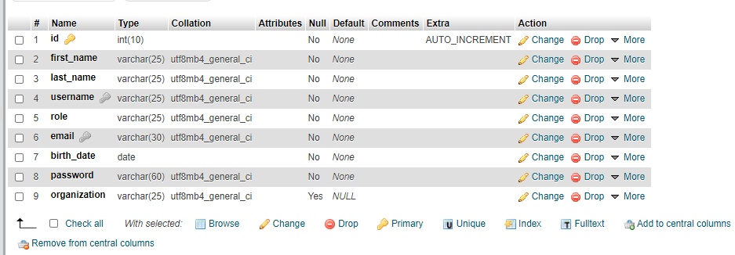
Tabela campaigns este folosita pentru a inregistra campaniile trimise de catre utlizatorii care completeaza formularul din pagina de Campaigns.Datele din aceasta tabela sunt mai apoi folosite pentru generearea de postari pe pagina dedicata acestora, numita Show Campaigns

In tabela notice_form sunt inregistrate cantitaile de gunoi impreuna cu orasele/localitatile in care acestea se afla pentru ca mai apoi, datele din acest tabel sa fie utilizate pentru generarea unor statistici usor de vizualizat de catre utilizator prin interfata grafica. Utlizatorul obisnuit este cel care completeaza formularul prin care sunt furnizate datele pentru tabela .
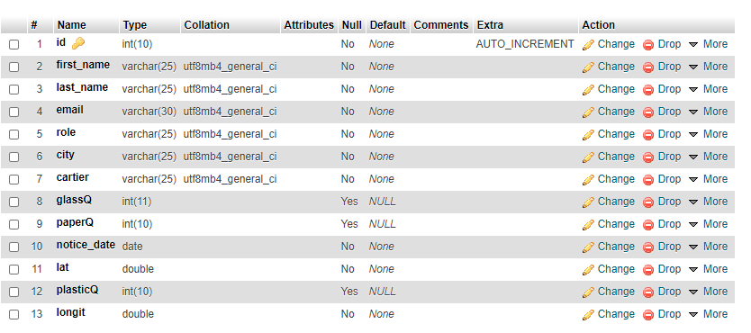
Aplicatia este realizata in limbajul de programare PHP, foloseste arhitectura "Model View Controller"(MVC) si principii REST API. De asemenea este folosit si limbajul JavaScript in situatii precum descarcarea unor fisiere PDF si libraria open source chartjs, folosita la crearea chart-urilor pentru statistici.
"Model-view-controller (MVC) (din engleză, aproximativ: model-vizualizare-controlor) este un model arhitectural utilizat în ingineria software. Succesul modelului se datorează izolării logicii de business față de considerentele interfeței cu utilizatorul, rezultând o aplicație unde aspectul vizual sau/și nivelele inferioare ale regulilor de business sunt mai ușor de modificat, fără a afecta alte nivele."
Avand in vedere aceste aspecte, codul este structurat intr-o parte privata a aplicatiei, cu denumirea de App, la care utilizatorul nu are acces, si o parte Public, prin care utilizatorul poate accesa pagina web.
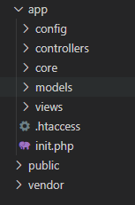
In functie de functionalitatea fiecarei pagini s-au folosit metode HTTP specifice, POST pentru trimite catre baza de date a informatiilor primite de la utilizator , GET pentru a primi date din tabelele create in baza de date.
Aplicația are două pagini speciale pentru logarea și înregistrarea utilizatorului.La aceste două pagini conținut este format din câte un formular. Cele două fomulare sunt create prin folosirea tag-ului form și input. Valorile introduse de utilizator sunt preluate de către controller,acesta le verifică,dacă apar erori,transmite înapoi la view mesaje de eroare specifice, iar dacă nu ,le trimite la model care realizează comunicarea cu baza de date.
Ne folosim de tag-ul span pentru a afisa mesaje de eroare exact inainte de inputul introdus de utilizator. In controller sunt verificate erori de tipul, valoarea inputului este null ,de asemenea se apeleaza metodele din modell pentru verificarea existenței unui username sau a unei parole în baza de date.Se verifică încălcarea proprietăților de unicitate a coloanelor username și email din baza de date ,din tabelul users.
Pentru comunicarea cu baza de date folosim PDO, și pentru evitarea de SQL injection folosim preparedstatement ,și bindParam.
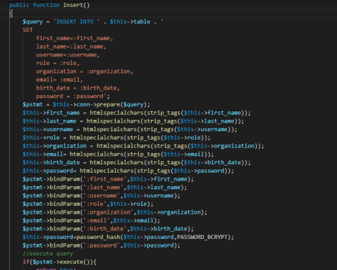
După ce un utilizator apasă butonul de submit la înregistrare,datele despre el vor fi introduse în baza de date ,și un mesaj de confirmare a crearei unui cont este trimis către email-ul specificat în formular. Pentru a realiza trimiterea un email am folosit PHPMailer ,care este o bibliotecă de coduri pentru a trimite e-mailuri în siguranță prin cod PHP de la un server web. De asemenea am folosit funcția password_hash(password,option) pentru a prelucra parola .Astfel password_hash(password,option) creează un nou hash de parolă folosind un algoritm puternic de hashing unidirecțional,iar în paza de date va fi salvată parola prelucrată. La autentificare se folosește funcția password_verify ( string $password , string $hash ) ,care verifică dacă hash-ul din baza de date se potrivește cu parola introdusă la logare de utilizator. După autentificare utilizatorii normali sunt redirecționați la pagina Home,iar adminul este redirecționat către o pagină specială de administrare. Pentru a păstra informațiile despre utilizatorul autentificat folosim variabila $_SESSION,la lagout folosim session_unset()care eliberează variabilele de sesiune,și session_destroy() care distruge sesiunea inițiată de utilizator.
Utilizatorul completeteaza formularul pus la dispozitie pe pagina campaigns.Formularul este creat prin folosirea tag-ului form si input. Valorile introduse de utilizator sunt verificate si preluate de catre controller. In caz de apar erori, datele nu sunt trasmise bazei de date. Toate campurile acestui formular sunt obligatorii astfel incat nu se va putea trece mai departe.
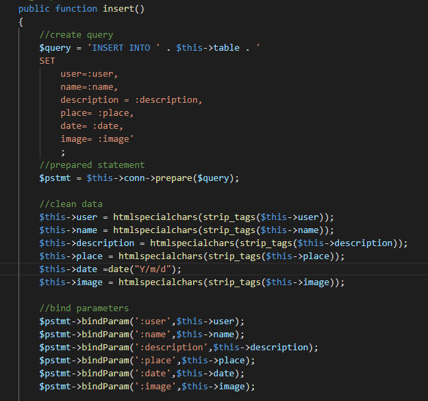
Campaniile postate de utilizatori sunt stocate in baza de date. Acestea sunt preluate din baza de date printr-un query si afisate pe pagina sub forma de postari. Controller-ul va apela modelul Stock, iar apoi va afisa view-ul ShowCampaigns.Un utilizator poate vedea campaniile doar daca este autentificat, adica daca este so sesiune pornita prin session_start().
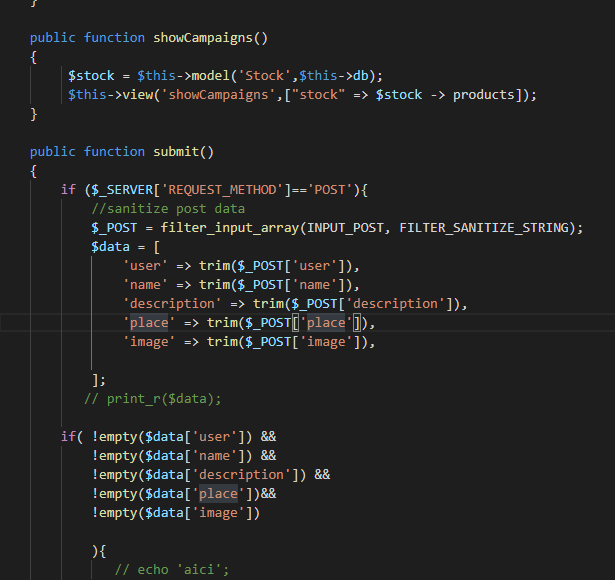
View-ul pentru harta: aici se afiseaza efectiv harta in pagina si se pun markerele pe harta Model:in Post.php avem o functie unde facem selectul pentru a prelua datele necesare pentru a adauga markere pe harta (calculam cantitatea de gunoi pe categorii din fiecare localitate raportata ).Prin controller facem comunicarea intre view si model : informatiile primite din model sunt transmise catre view prin controller. Post.php:
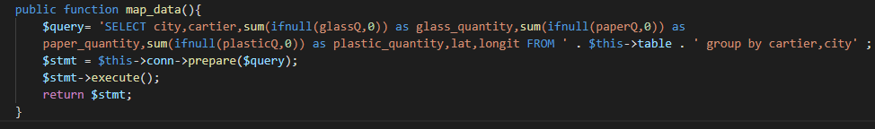
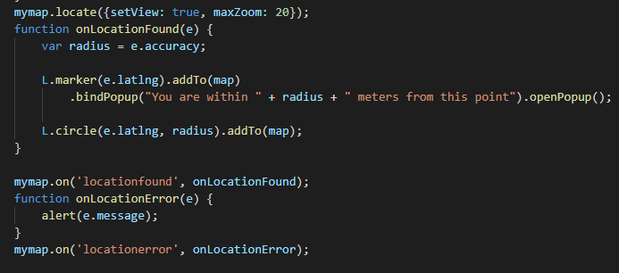
Pentru a realiza harta am folosit o librarie open source Leaflet, iar mapa efectiva am luat-o de pe https://www.maptiler.com/. Dat fiind ca pot exista mai multe markere in acelasi loc am folosit o modalitatea de adaugare a markerelor prin care markerele de la aceeasi locatia vor face clustering, putand ulterior sa vizualizam continutul acestui cluster printr-un click. var markers = L.markerClusterGroup(); Din model preluam si coordonatele localitatii : lat si longit pentru a putea adauga un marker la o locatie specifica var point=[lats[i],longits[i]];
Am adaugat si faptul ca userului i se va cere acordul pentru a afla locatia acestuia: daca accepta se va face zoom pe aceasta, daca nu ramane la pozitia initiala care are zoomul pe Romania.
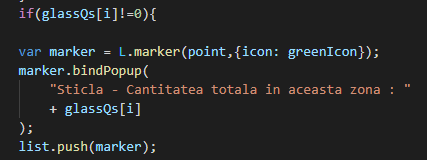
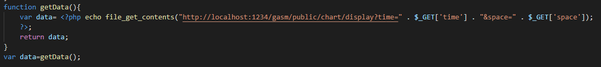
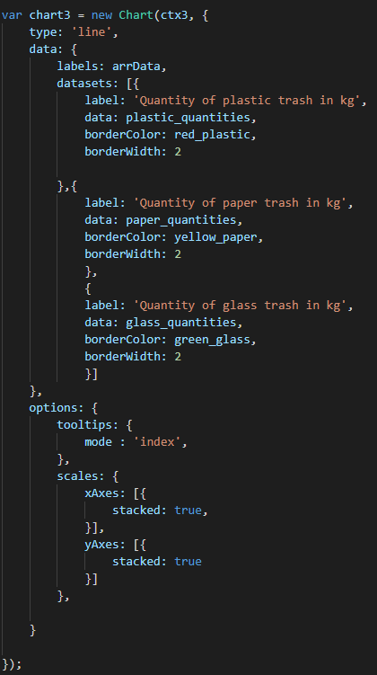
Pentru a prelua coordonatele localitatilor introduse de utilizatori am apelat la jsonul disponibil la https://raw.githubusercontent.com/rennokki/romania.json/master/json/regions.json. Pentru fiecare localitate introdusa de user atunci cand raporteaza gunoiul pentru respectiva locatie vom introduce lat si long pentru respectiva locatie preluate din jsonul respectiv
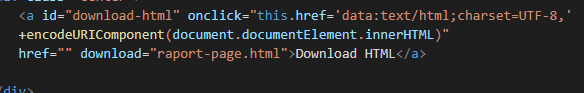
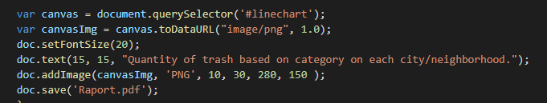
De asemenea exista in dreapta, in mijloc un zoom control unde se poate face zoom in/out pe harta.
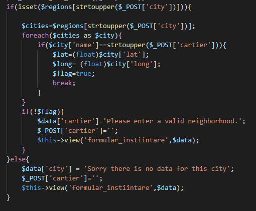
In formulare de pe paginile de login,register,campanii si statistici, daca utilizatorul va introduce date gresite/invalide/indisponibile, acesta va fi atentionat prin mesaje de eroare, trimise de view-uri.
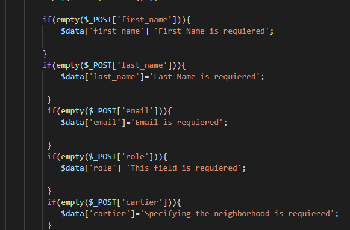
Pentru pastrarea userului logat si a datelor sale ne folosim de session_start().
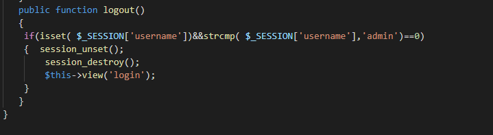